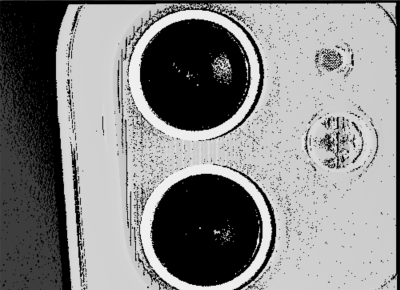
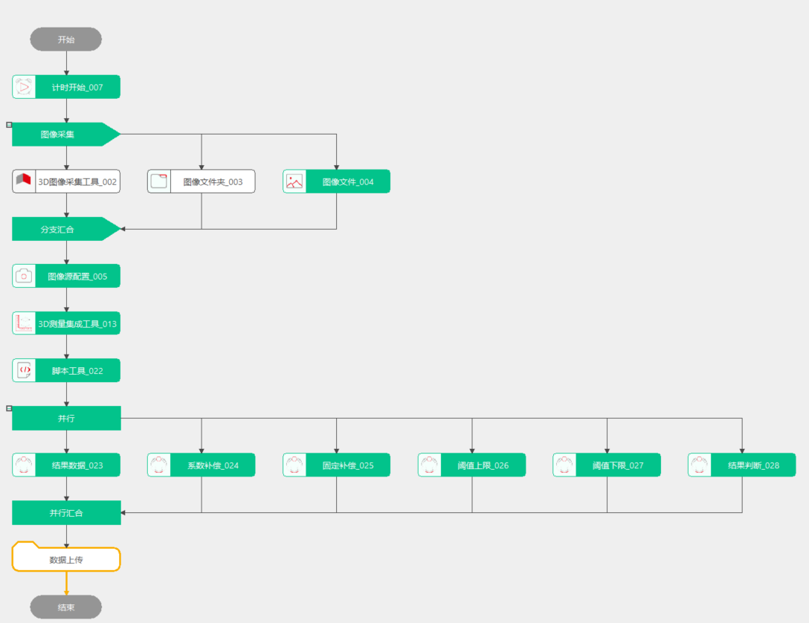
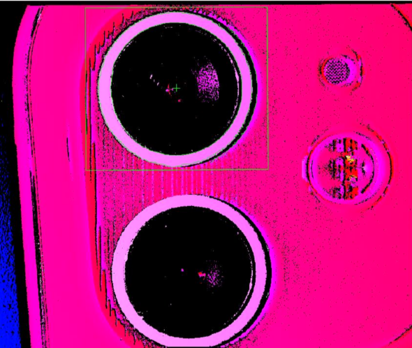
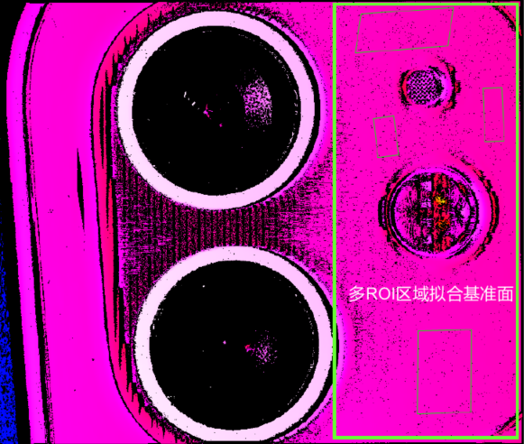
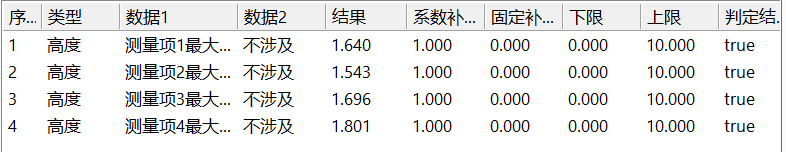
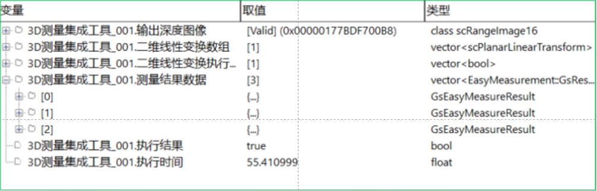

Dự án này chủ yếu đo chênh lệch chiều cao từ vòng ngoài của camera tới mặt phẳng chuẩn.
Như hình dưới, sản phẩm cần đo; trong quá trình định vị, cần chọn các đặc trưng nổi bật của vật liệu để định vị. Quá trình nội suy mặt phẳng nên thực hiện trên nhiều khu vực để đảm bảo độ ổn định của mặt phẳng nội suy.

mermaid
graph LR;
Chờ tín hiệu PLC-->Thu ảnh 3D
Thu ảnh 3D-->Định vị sản phẩm - đăng ký mẫu
Định vị sản phẩm - đăng ký mẫu-->Cài đặt các mục đo
Cài đặt các mục đo-->Cài đặt vùng kiểm tra
Cài đặt các mục đo-->Xử lý trước
Cài đặt các mục đo-->Nội suy mặt phẳng loại trừ ngoại biên
Cài đặt các mục đo-->Đo chiều cao
Cài đặt các mục đo-->Cài đặt xuất dữ liệu
Xuất dữ liệu-->Tổng hợp và đánh giá kết quả kiểm tra
Định vị sản phẩm - đăng ký mẫu-->Tổng hợp và đánh giá kết quả kiểm tra
Tổng hợp và đánh giá kết quả kiểm tra-->Gửi kết quả kiểm tra tới PLC

Định vị sản phẩm
Chọn đặc trưng định vị là các đường biên cạnh, như hình dưới.

Cài đặt các mục đo
Theo yêu cầu đo, thêm các mục đo, sau đó cài đặt vùng đo, xử lý trước, mặt phẳng chuẩn và các thông số đo chiều cao, như hình dưới.

Cài đặt xuất dữ liệu
Theo yêu cầu đo, trong danh sách xuất dữ liệu, thêm các mục đo cần thiết, ví dụ giá trị cực đại của mục đo 1, đồng thời điều chỉnh hệ số bù và bù cố định, cũng như ngưỡng trên/dưới để thu được giá trị kết quả và kết quả đánh giá.

Trong cửa sổ xuất dữ liệu có thể xem được mảng biến đổi tuyến tính 2D và dữ liệu kết quả đo.
Dữ liệu kết quả đo bao gồm giá trị gốc, dữ liệu kết quả và kết quả đánh giá.

参见“\Samples\应用案例\测高类项目\深度图像测量项目\深度图像段差测量工程.gvp”。